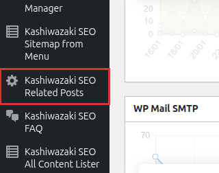

インストール・初期設定
Kashiwazaki SEO Related Posts のインストール方法と、AI関連記事機能に必要な基本設定を説明します。
インストール手順
WordPress管理画面から プラグイン > 新規追加 に移動し、「Kashiwazaki SEO Related Posts」を検索します。または、プラグインのZIPファイルを プラグイン > 新規追加 > プラグインのアップロード からアップロードします。
「今すぐインストール」をクリックし、インストール完了後「有効化」をクリックします。
管理画面の左メニューに「Kashiwazaki SEO Related Posts」が追加されます。クリックして設定画面を開きます。

OpenAI APIキーの設定
AI関連記事機能を使用するには、OpenAI APIキーの設定が必要です。
OpenAI Platform にアクセスし、APIキーを生成します。
設定画面の「OpenAI API設定」セクションで、生成したAPIキーを入力します。
「設定を保存」ボタンをクリックして変更を適用します。
OpenAI APIの利用には料金が発生します。APIキーの管理には十分注意し、使用量の上限を設定することを推奨します。APIキーはサーバー側で安全に保管されます。
基本設定
表示形式
関連記事の表示形式を3種類から選択できます。
| 表示形式 | 説明 |
|---|---|
| リスト | 縦一列のリスト形式。サムネイル・タイトル・抜粋を表示します。シンプルで可読性が高いです。 |
| グリッド | カード形式のグリッドレイアウト。サムネイルが大きく表示され、視覚的なインパクトがあります。 |
| スライダー | 左右にスワイプ可能なスライダー形式。省スペースで多くの関連記事を表示できます。 |
カラーテーマ
関連記事セクションのカラーテーマを6色から選択できます。サイトのデザインに合わせて最適な色を選んでください。
| テーマ | 説明 |
|---|---|
| ブルー | 信頼感のあるブルー系カラー。ビジネスサイトやメディアサイトに最適です。 |
| グリーン | ナチュラルなグリーン系カラー。健康・環境関連サイトにおすすめです。 |
| レッド | 目を引くレッド系カラー。アクション性の高いサイトに適しています。 |
| パープル | 高級感のあるパープル系カラー。クリエイティブなサイトに調和します。 |
| オレンジ | エネルギッシュなオレンジ系カラー。ポジティブな印象を与えます。 |
| グレー | 落ち着いたグレー系カラー。どんなテーマにも馴染むニュートラルな色です。 |
表示件数
関連記事の表示件数を設定します。デフォルトは5件です。コンテンツの量やサイトの目的に応じて調整してください。
表示件数が多すぎるとページの読み込み時間に影響します。3〜8件程度を推奨します。
AI類似度分析の仕組み
本プラグインのAI関連記事機能は以下の流れで動作します。
投稿のタイトル・本文・カテゴリなどの情報をOpenAI GPTに送信します。
GPTが記事間の意味的な類似度をスコアリングし、関連度の高い記事を特定します。
分析結果はTransientキャッシュに保存され、次回以降のアクセスではキャッシュからデータを返します。
フロントエンドで設定に基づいた表示形式・カラーテーマで関連記事を表示します。
AI分析の結果はキャッシュされるため、APIの呼び出しは初回および キャッシュ有効期限切れ時のみ発生します。通常のページ表示ではAPIコストは発生しません。